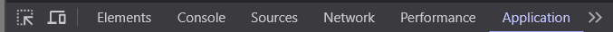

Universal Cookie é uma API Open Source feita para logar em qualquer conta por meio de Cookie, SessionID ou Token!
Como Funciona? / GERAL
- Vá na versão web da plataforma que você quer operar (ex www.instagram.com)
- Abra o perfil que deseja acessar
- Aperte Ctrl +Shift + I
- Vá para a sessão "Application" ou na língua do seu dispositivo

A partir daqui as instruções irão variar dependendo do site que você estiver, siga as imagens em caso de dúvida: